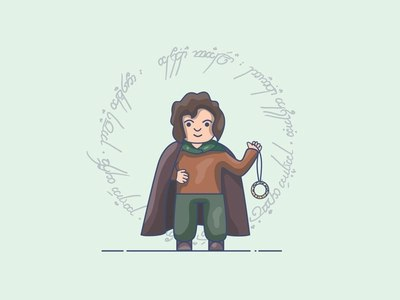
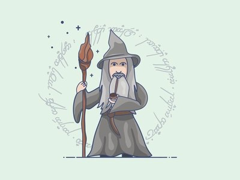
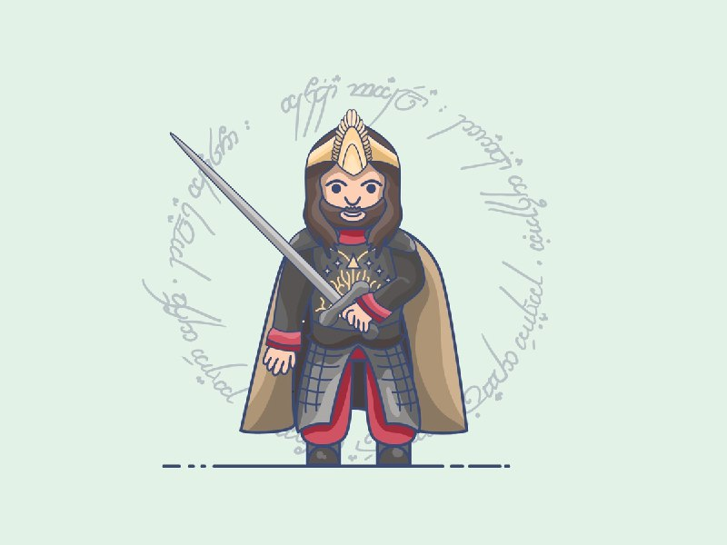

Personagens
-
Frodo
Frodo pertence à raça dos hobbits, um povo tranquilo e pacífico e não muito chegado à aventuras. Nunca guerrearam e seus corações não ambicionam poder e riquezas!
-
Gandalf
Gandalf, o Cinzento foi o último dos Istari a chegar na Terra-Média, o desembarque foi em Mithlond. Círdan, o Armador sentiu que ele tinha a maior grandeza interior em sua primeira reunião nos Portos, e por isso lhe deu Narya, o Anel de Fogo. Os magos foram mandados para ajudar homens, elfos e anões, mas só através da fala pois foi proibido usar a força para dominá-los
-
Aragorn
Decendente direto de Isildur e herdeiro de seu trono, Aragorn foi criado em Valfenda, na casa do meio-elfo Elrond, onde apaixonou-se por sua filha Arwen. Aragorn é um exímio guerreiro e excelente guia, pois conhece a geografia da Terra-média como poucos.